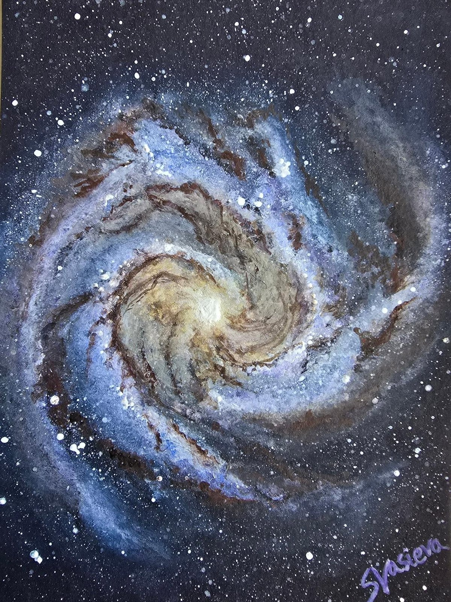

The Southern Pinwheel Galaxy (M83)
Watercolour interpretation of M83, the Southern Pinwheel Galaxy, a massive, grand-design spiral galaxy near the constellation border of Hydra and Centaurus. It is at the centre of the M83 galaxy group, next to the Centaurus A galaxy group, and the two are sometimes classified as one larger group.